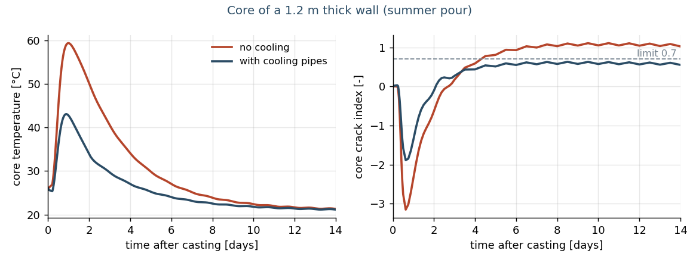
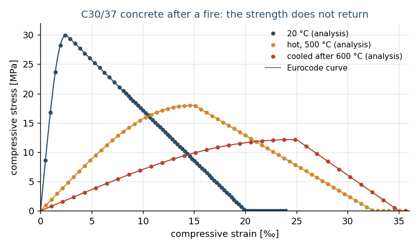

Massive concrete without surprises, structures that withstand a fire
Two questions come up again and again on larger concrete works and buildings. Will a thick wall crack while it hardens? And how long does a structure stay up in a fire? For both we have built our own, fully documented analysis chain on an open-source finite element package, checked against the Eurocodes, independent reference calculations and analytical solutions.
Early-age concrete: heat, cooling and cracks
Hardening concrete releases a lot of heat. Without cooling, the core of a 1.2 m wall reaches about 60 °C, while the faces and the older slab below stay cooler. That restraint causes tensile stresses and possibly cracks that affect watertightness and durability.
We calculate the temperature history per season, with or without cooling pipes, the hardening, shrinkage and creep to Eurocode 2, the cracking risk and – with explicit crack models – the crack width. For a tunnel wall from practice, our temperatures lie within 1 to 2 °C of an independent reference calculation, with the same conclusion on the need for cooling.
- Cooling works: without cooling, the core of a summer pour reaches 61 °C and the core crack index rises to 1.1 (cracks expected); with cooling pipes the core stays at 49 °C and the index at 0.63, below the 0.7 limit (see figure). A coupled calculation of the whole pipe network, with the water warming up along each circuit, gives the same core temperature to within 0.1 °C: one average water temperature per pipe is sufficient here.
- Crack width: with the degree of restraint from the analysis and Eurocode 2 part 3 (annex M), the reinforcement studied gives a crack width of about 0.07 mm. Explicit crack models also calculate the cracks themselves: their number, position and opening. In a reinforced tie fixed at both ends (Ø20/150) with an imposed shortening of about 470 µm/m, six cracks form at a mean spacing of 0.52 m (Eurocode 2: at most 0.66 m), with a largest opening of 0.21 mm, in line with Eurocode 2 part 3.
- Calibration on site measurements: with two thermocouples (core and formwork) we recover the heat release, its rate and the heat exchange to within 1 %, also with measurement noise.
- Tensile strength: tests on a tunnel concrete showed an early tensile strength well above the Eurocode value (twice as high after 1 day, one and a half times after 7 days). Using measured values gives a more realistic cracking risk.

Fire: beyond the tables
Besides tables, the Eurocodes allow advanced calculation methods: the heating of the cross-sections and the mechanical behaviour up to failure, with temperature-dependent material laws. This pays off for existing buildings with little concrete cover, for special shapes and for natural fire scenarios.
- Heating checked: temperatures in concrete and steel cross-sections follow the Eurocode reference solutions to within 1 to 5 °C.
- Steel beams: the calculated failure lies within 5 °C of the analytical critical temperature. Steel columns with buckling follow buckling theory with the temperature-dependent steel law.
- Validation examples of the German National Annex (DIN EN 1991-1-2/NA, Annex CC): for the cantilever column the failure time (97 against 93 minutes), top displacement and base moment are within the tolerances, as is the reinforcement of the lightly reinforced beam (4 % below the reference). For the heavily reinforced beam we find 12.5 % less reinforcement: the reference steel temperatures are higher than in every recalculation, including published validations of other software. With the reference temperatures the difference is 6 %, within the 10 % tolerance.
- Concrete slab in an ISO fire: the advanced analysis gives 169 minutes of fire resistance, against 144 minutes with the simplified method. For existing buildings, that difference can save a renovation.
- Cooling phase of a natural fire: concrete does not regain its strength. With a material law to the new Eurocode (FprEN 1992-1-2:2023) we also calculate what happens after the fire. A column loaded to 70 % of its cold capacity survives the heating, but fails an hour after the peak of the fire, while the fire is already dying down. At 60 % it stays up, with two thirds of its original capacity left. An independent check calculation gives the same times.

What does this mean for your project?
- Massive concrete (basements, tunnels, retaining walls, raft foundations): need for cooling, casting sequence and crack-control reinforcement substantiated instead of estimated.
- Fire safety: performance-based assessment of existing structures in renovation or change of use, and independent review of third-party calculations.
- Transparent: every step is documented and checked against an independent reference. Every project application gets project-specific input and its own check.
Questions about a specific project? Email info@easuys.be.